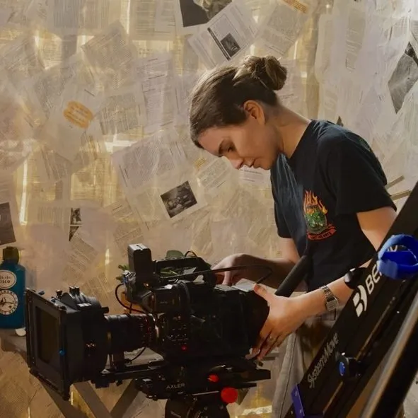
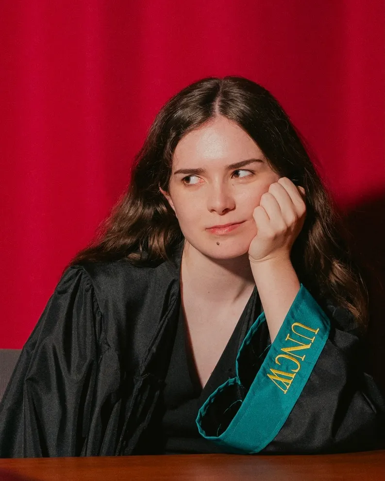
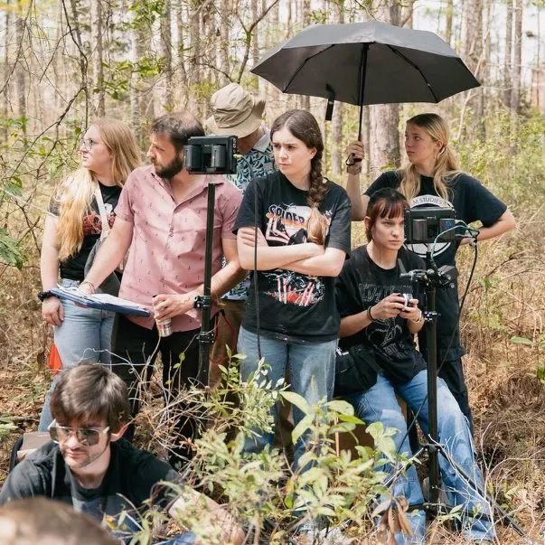

About Me
Hi! I’m a filmmaker and graphic designer based in Wilmington, NC. I graduated from UNCW in 2025 with a BA in Film Studies. Since then, I’ve been doing sports videography and freelance editing. Films that I’ve done cinematography for have been selected for the Cucalorus Film Festival, Fuquay Film Fest, and Raleigh Film and Art Festival. Recently, I finished my third collaboration with Carolina Dance Theater, a 15 minute video that corresponds with a live dance performance to draw parallels between the story of Frankenstein and the prominence of generative AI.
Contact: rubyschweitzer@gmail.com
Instagram: @rschwz (more pictures and clips from my work!)
LinkedIn: Add me

Publications
- “Twin Peaks: Fire Walk with Me (1992) in Three Frames.” Film Matters Magazine, Intellect Discover, 5 Mar. 2024, www.filmmattersmagazine.com/2024/01/09/twin-peaks-fire-walk-with-me-1992-in-three-frames-reviewed-by-ruby-schweitzer/.
- “The Spectacular Thrill of Nope (2022).” Film Matters, vol. 15, no. 2, 1 Sept. 2024, pp. 128–131, https://doi.org/10.1386/fm_00352_5.
- “Rebecca in 1 Frame.” Film Matters, vol. 15, no. 3, 1 Dec. 2024, pp. 98–100, https://doi.org/10.1386/fm_00367_5.
- “Videographic Cinema, Jonathan Rozenkrantz (2022).” Film Matters, vol. 16, no. 1, 1 Mar. 2025, pp. 74–75, https://doi.org/10.1386/fm_00386_5.

Awards
- Award for Excellence in Film Production — Awarded to one graduating UNCW Film Studies student per semester.
- Frank Capra Jr. Scholarship 2024-2025 — Awarded to one UNCW Film Studies student per year.
- Pat Leonard Senior Medallion — Awarded to 25 top graduating seniors at UNCW each spring.
- Media Student of the Year — Awarded to one student for involvement in UNCW student media organizations.
- UNCW Chancellor’s Distinguished Merit Scholarship — Four-year academic merit scholarship.
